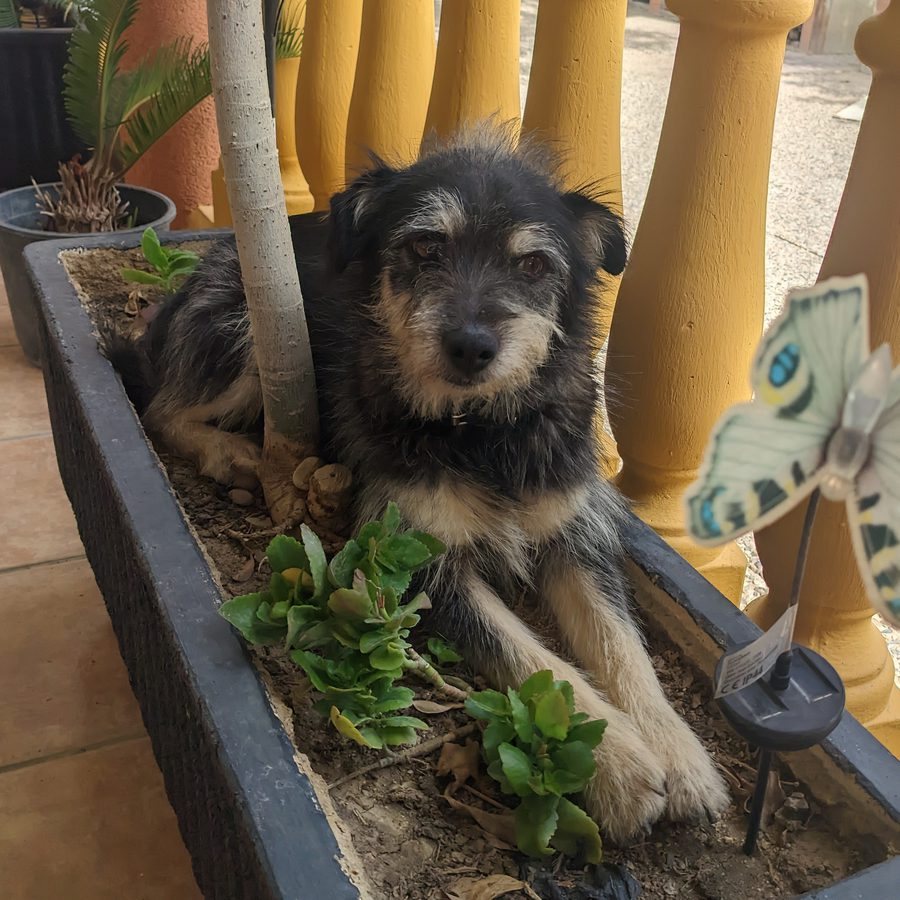
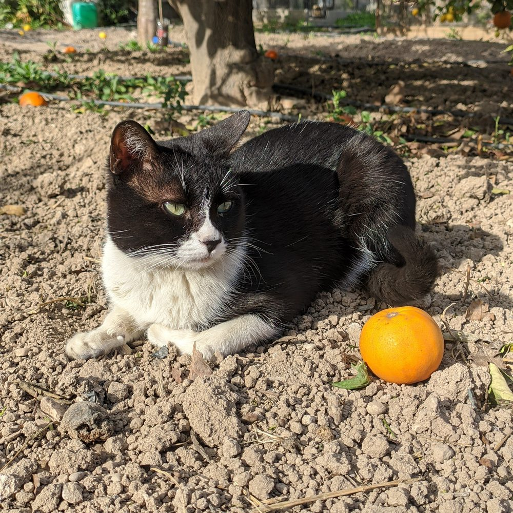
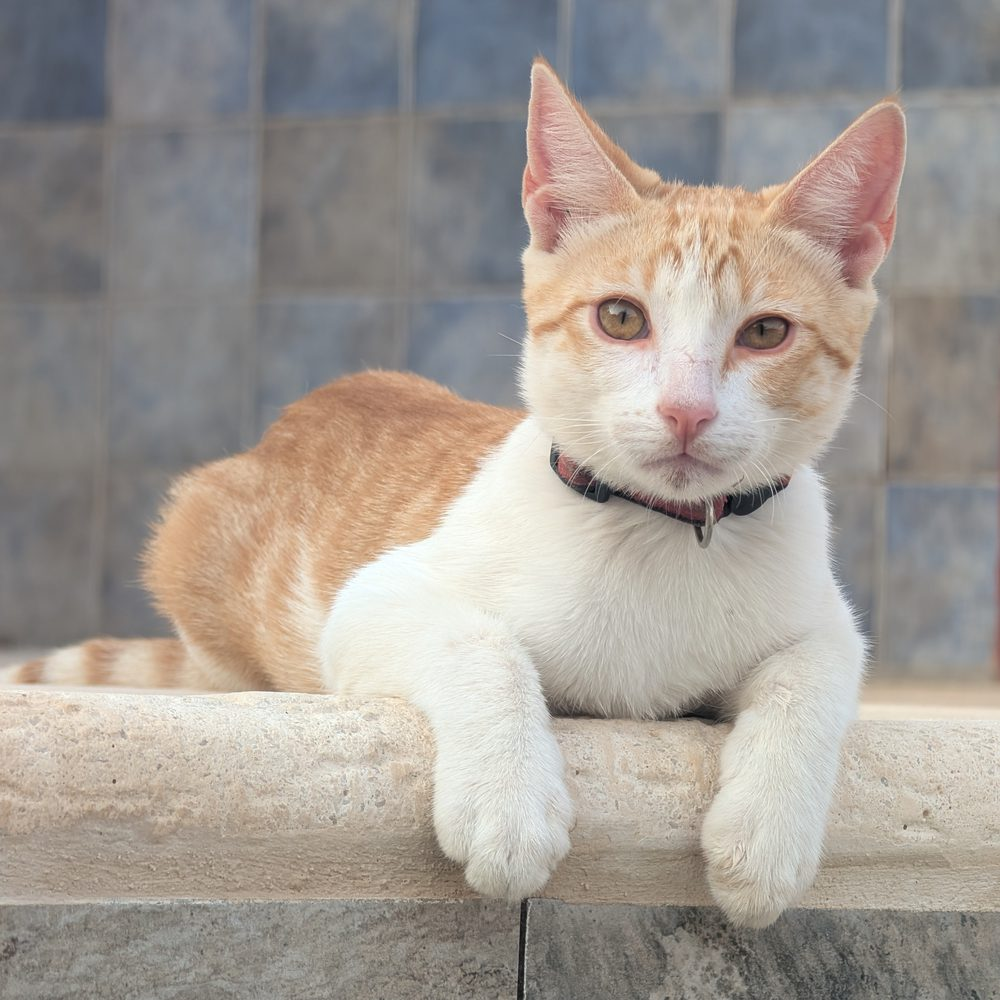

Experimenta con modelos reales de visión artificial y filtros matemáticos, todo en tu navegador y con tus propias imágenes. Sin instalaciones, sin servidores.
⚠ Los modelos de IA en vivo y Siguiente Token son versiones ligeras optimizadas para el navegador. Ofrecen menor precisión que sus versiones completas y pueden fallar con algunas entradas. Su propósito es demostrar cómo funciona la tecnología, no producción.
Aplica filtros convolucionales reales sobre cualquier imagen — sin TF.js, sin red neuronal, sin carga. Todo ocurre en tu navegador con aritmética pura. Edita el kernel directamente para ver el efecto al instante.



Así es como la primera capa convolucional de una CNN ve la imagen — en paralelo, con múltiples filtros simultáneos.
Usa modelos reales de IA directamente en tu navegador. Sin servidores, sin subidas a la nube: todo se ejecuta en tu dispositivo con TensorFlow.js. Elige una fuente de entrada, selecciona la tarea y obtén resultados al instante.
Identifica el objeto principal de la imagen y muestra las 10 categorías más probables con su nivel de confianza.
GPT-2 corre íntegramente en tu navegador. Una vez cargado, escribe un contexto y el modelo calculará los logits reales del vocabulario completo (~50K tokens), aplica softmax con tu temperatura y muestra los 8 candidatos más probables. Sin API, sin conexión.
Cómo funciona: El modelo hace un forward pass completo y
devuelve un vector de logits de 50,257 dimensiones (una por token del vocabulario). Se aplica softmax
con temperatura: p(i) = exp(lᵢ/T) / Σ exp(lⱼ/T).
Las probabilidades mostradas son exactas, no estimadas.